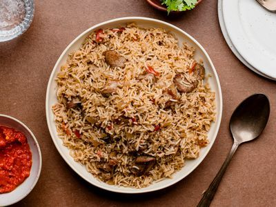

Mary Aphline Atieno
Home
About
Menu
Pilau (East African Spiced Rice)
Fragrant, beefy, perfectly spiced rice straight from East Africa. Trust — this is a whole vibe. 🍚🔥
Print
Share
Course
Main Dish
Cuisine
East African
Prep Time
20 minutes
Cook Time
30 minutes
Total Time
50 minutes
Servings
5 servings
Calories
366 kcal

Ingredients
1 tsp cloves, 2 tbsp cumin seeds, 1/2 tbsp black peppercorns, 12 cardamom pods, 1 cinnamon stick
2 cups basmati rice
5 potatoes (quartered)
¼ cup vegetable oil
2 red onions (sliced)
4 cloves garlic (minced)
2 tbsp ginger (minced)
1 serrano chile (chopped)
1 tbsp pilau masala
2 beef stock cubes
1 lb beef sirloin (cubed)
3 Roma tomatoes (diced)
4 cups water
2 bay leaves
Salt to taste
Instructions
Roast spices lightly and grind them into Pilau Masala.
Heat oil, fry onions until golden.
Add garlic, ginger, serrano chile, cook until fragrant.
Add beef, pilau masala, stock cubes, bay leaves, and salt. Brown the meat.
Mix in tomatoes, cook till they release juices.
Add potatoes and water. Boil for 10 mins.
Stir in rice, cover tightly with foil. Cook on low for 20 mins.
Fluff with a fork and serve hot with fresh Kachumbari!
Nutrition Facts (per serving)
366
Calories
59g
Carbs
22.5g
Protein
3.9g
Fat
3.4g
Fiber
2.8g
Sugar
771mg
Sodium
Back to Recipes